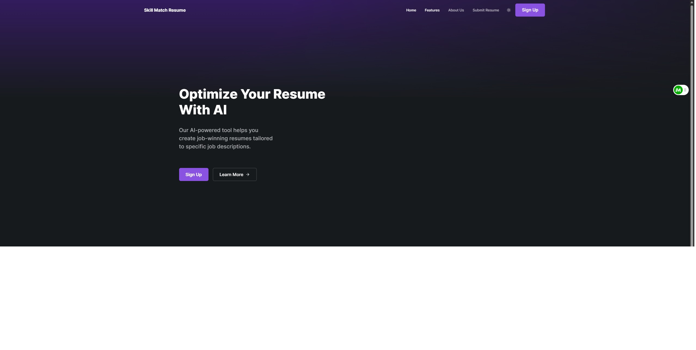
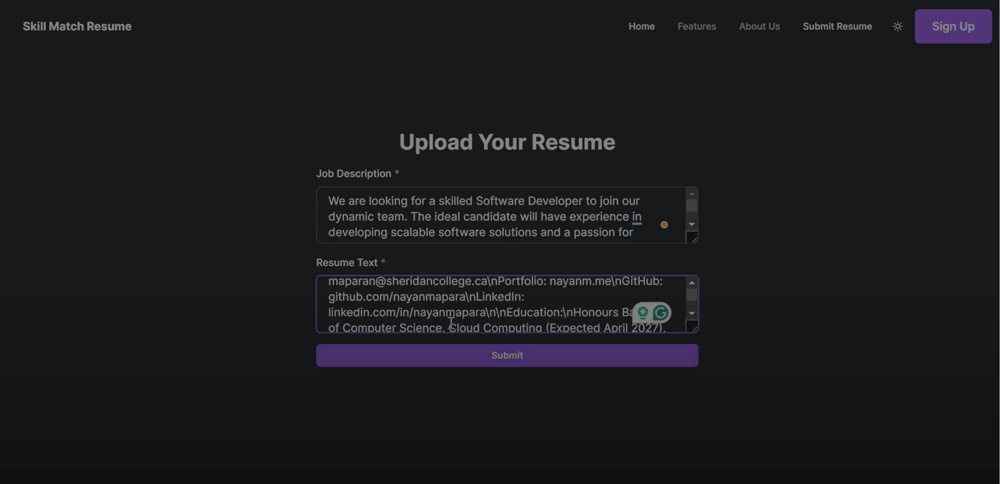
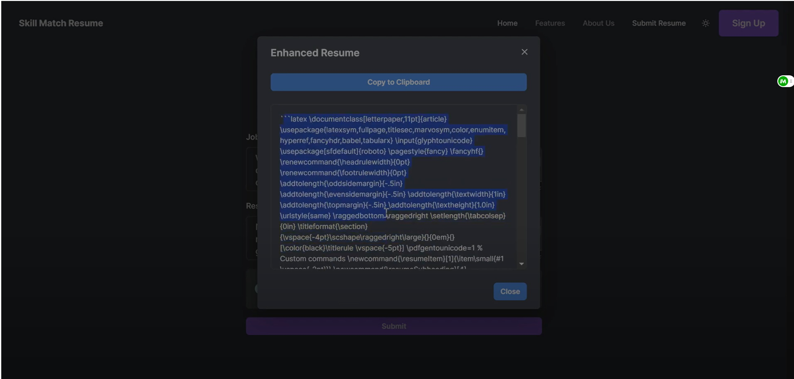

AI Resume Optimizer
Project Overview
Introduction:
- Title: Skill Match Resume
- Duration: July 2024 - July 2024
- Role: Front end Developer
- Team: Me (Front end), Niharika (Databasing and Frontend), Nayan (Backend)
- Technologies Used: BJT Transistors, Resistors, LT Spice, Waveforms Software, Analog Discovery 2
Summary:
Skill Match Resume is an AI-driven platform designed to optimize resumes for specific job applications. Utilizing advanced algorithms, it analyzes user resumes and job descriptions to provide customized enhancement suggestions, thereby increasing the likelihood of securing job interviews.
Key Decisions and Implementation:
- User Interface: Designed an intuitive and user-friendly interface using React.js and Next.js.
- Backend Development: Implemented a robust backend with Flask to handle user requests and integrate AI services.
- Real-Time Feedback: Developed real-time feedback mechanisms to provide instant suggestions for resume improvements.
- Version Control Used Git for version control, ensuring smooth collaboration and code management.
- Database Management: Utilized MongoDB for efficient data storage and retrieval.
Technologies and Tools:
- Flask: Used for the backend framework to manage server and API requests.
- Python: Core programming language for developing AI algorithms.
- Google Generative AI: Utilized for advanced AI capabilities in resume optimization.
- React.js & Next.js: Frontend frameworks for creating a responsive and interactive user interface.
- CSS: Used for styling and ensuring a visually appealing user experience.
- Git: Implemented for version control to track changes and collaborate effectively.
- MongoDB: Employed for database management to store user data and optimization results.
Project Achievements
- Positive User Feedback: High user satisfaction with the platform's ease of use and relevance of suggestions.
- Real-Time Enhancements: Successfully implemented real-time feedback and optimization suggestions.
Gallery/Visuals
Home Page:
Features Page:
About Us Page:
Page to upload resume and job description:
Returns latex code for formatted and optimized resume:
Challenges and Solutions
- Challenge: Ensuring the AI accurately interprets and enhances various resume formats.
- Solution: Iterative testing and refining of API implementation and communication with AI model.
- Challenge: Creating a user-friendly interface that caters to a wide range of users.
- Solution: Conducted extensive user testing and incorporated feedback to enhance usability.
Future Directions
- Expanded Template Library: Plans to offer more resume templates to cater to different professional styles.
- Advanced Job Matching: Enhance job matching algorithms to consider factors like company culture and location.
- Job Board Integration: Integrate with popular job boards to allow users to apply directly from the platform.
Front End Source Code
View on GitHubBackend Source Code
View on GitHub